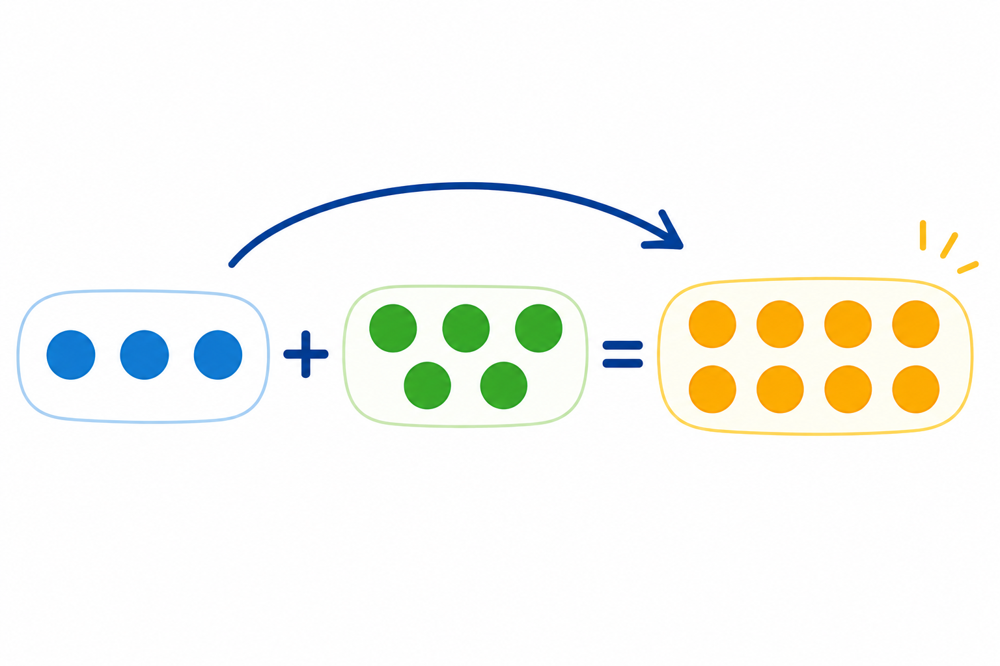

Co to jest? Що це?
Łączymy dwie (lub więcej) liczby. Pytanie: ile będzie razem?
Об'єднуємо два (чи більше) числа. Питання: скільки буде разом?
Jak w szkole? Як у школі?
Zapis w zeszycie: składnik + składnik = suma.
Запис у зошиті: доданок + доданок = сума.
Przykład z życia Приклад з життя
W pudełku 3 kredki, dokładasz 5. Razem 8.
У коробці 3 олівці, докладаєш 5. Разом 8.
3 + 5 = 8